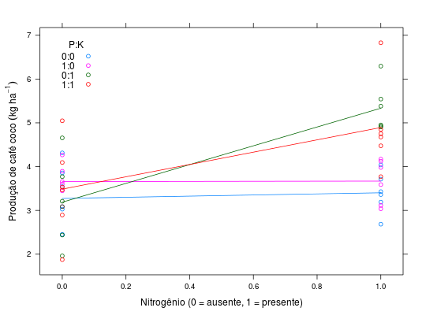
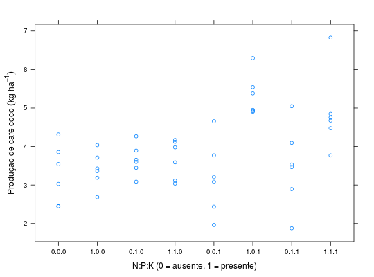

Resultados de um experimento em arranjo fatorial triplo 2 \(\times\) 2 \(\times\) 2, instalado em delineamento de blocos casualizados, para estudar o efeito da combinação de nitrogênio, fósforo e potássio na produção de café coco.
Um data.frame com 48 observações e 5 variáveis, em que
NPKblocoprodBANZATTO; KRONKA (2013), Quadro 5.3.1, pág. 113.
library(lattice) data(BanzattoQd5.3.1)#> Warning: data set ‘BanzattoQd5.3.1’ not foundaddmargins(with(BanzattoQd5.3.1, tapply(X = prod, INDEX = list(interaction(N, P, K), bloco), FUN = sum)))#> 1 2 3 4 5 6 Sum #> 0.0.0 3.029 3.857 2.448 2.448 3.543 4.314 19.639 #> 1.0.0 3.362 3.714 3.429 3.190 2.686 4.038 20.419 #> 0.1.0 3.448 3.600 3.895 4.267 3.086 3.657 21.953 #> 1.1.0 4.171 3.114 4.124 3.981 3.038 3.590 22.018 #> 0.0.1 2.438 3.086 3.771 4.657 1.962 3.210 19.124 #> 1.0.1 4.905 6.295 4.924 4.952 5.381 5.543 32.000 #> 0.1.1 3.533 5.048 3.467 4.095 1.876 2.895 20.914 #> 1.1.1 4.476 4.752 4.848 4.676 6.829 3.771 29.352 #> Sum 29.362 33.466 30.906 32.266 28.401 31.018 185.419xyplot(prod ~ N, data = BanzattoQd5.3.1, groups = interaction(P, K, sep = ":"), type = c("p", "a"), auto.key = list(title = "P:K", cex.title = 1, columns = 1, corner = c(0.05, 0.95)), xlab = "Nitrogênio (0 = ausente, 1 = presente)", ylab = expression("Produção de café coco"~(kg~ha^{-1})))xyplot(prod ~ interaction(N, P, K, sep = ":"), data = BanzattoQd5.3.1, xlab = "N:P:K (0 = ausente, 1 = presente)", ylab = expression("Produção de café coco"~(kg~ha^{-1})))